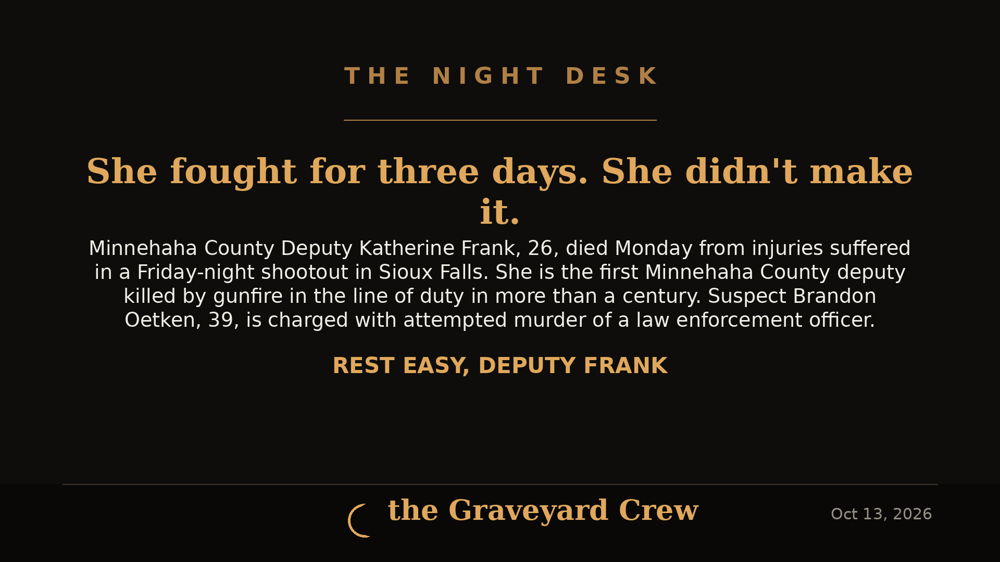

October 13, 2026
Deputy Katherine Frank, 26, Dies Three Days After Line-of-Duty Shooting in Sioux Falls

Headline card by The Night Desk
Deputy Katherine Frank, 26, Dies Three Days After Line-of-Duty Shooting in Sioux Falls
Minnehaha County Deputy Katherine Ann Frank, 26, died Monday, Oct. 12, 2026, three days after she was shot in the line of duty during an exchange of gunfire in southwest Sioux Falls. She is the first Minnehaha County deputy killed by gunfire in the line of duty in over a century.
The shooting
Three deputies responded to a call for service at about 7 p.m. Friday, Oct. 9, and arrived at the home in the 2900 block of South Keyrell Drive — near 41st Street and Ellis Road — by about 7:30 p.m. At approximately 8:02 p.m., shots were fired during an encounter, and Frank and the suspect were both struck.
Deputies gave medical aid to both at the scene, and both were taken to different area hospitals. Frank was listed in critical condition Saturday. She died Monday, surrounded by family and loved ones. The sheriff's office confirmed she was an organ donor.
The reason behind the initial call for service remains unclear. MCSO leaders said details were limited out of respect for the family.
The suspect
Brandon Oetken, 39, of Sioux Falls, was arrested and charged with three counts of attempted murder on a law enforcement official and six counts of aggravated assault of a law enforcement official, according to Minnehaha County State's Attorney Daniel Haggar at a Saturday press conference.
Oetken was also shot during the incident; his condition remains unclear. As of Monday evening, he had not been booked into the Minnehaha County Jail and no new charges had been filed — but with Frank's death, prosecutors are widely expected to upgrade the charges. The Sioux Falls Police Labor Council publicly urged prosecutors to "pursue every criminal charge warranted by the evidence, to the fullest extent permitted by law."
Who Deputy Frank was
Frank joined the Minnehaha County Sheriff's Office in June 2024, serving a little over two years. Before that, she worked as a corrections officer at the South Dakota State Penitentiary beginning in September 2022.
According to a fundraiser organized by the Minnehaha County Deputies Association, she leaves behind her parents, five siblings (ages 28, 24, 23, 21 and 15), her grandparents Dan and Deb, her boyfriend Austin, and her dogs Ares and Aspen.
"Katherine was more than her badge. She was a beloved sister, daughter, granddaughter, girlfriend and friend," the Deputies Association said in a statement.
On Monday evening — less than two hours after her death was announced — dozens of colleagues, friends and family gathered at the Law Enforcement Center in downtown Sioux Falls with flowers, balloons and notes, decorating a sheriff's vehicle in her honor.
What happens next
The shooting is under investigation by the Division of Criminal Investigations under the South Dakota Attorney General's Office to assess the use of force by officers involved. The investigation is expected to take 30 days, at which point Attorney General Marty Jackley is expected to release the findings.
Memorial services have not yet been announced.
This story is developing. The Night Desk will update this article as the investigation and charges move forward.
Source: Sioux Falls Argus Leader
Source: Sioux Falls Argus Leader — read the original report
← Back to latest stories